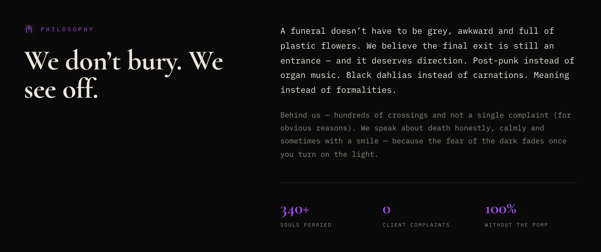
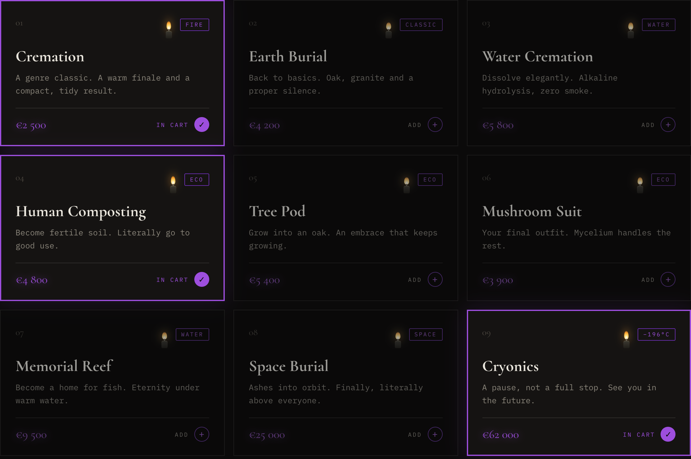
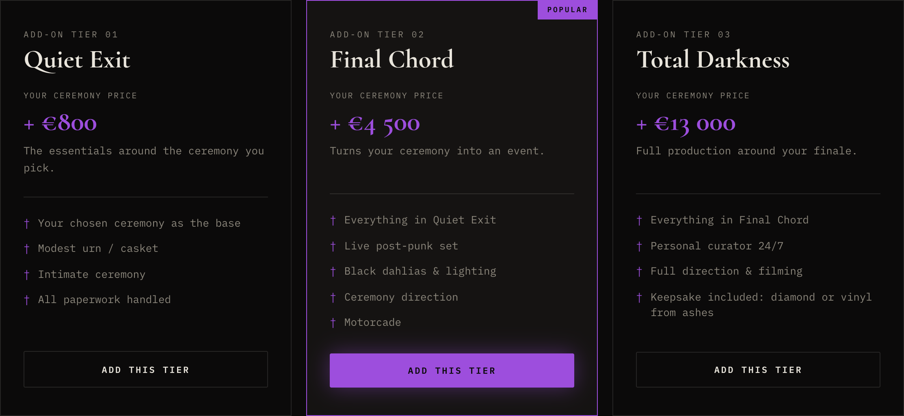
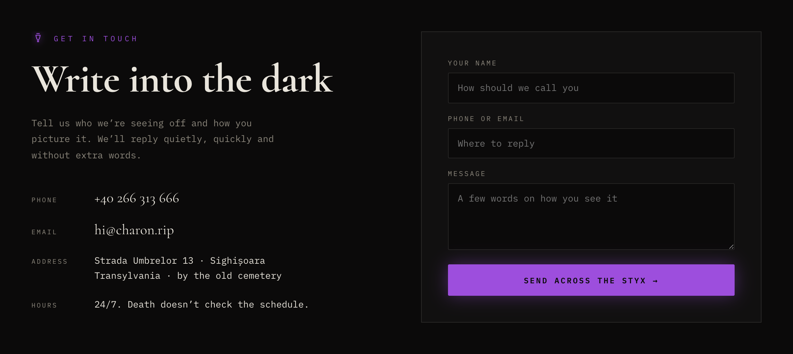
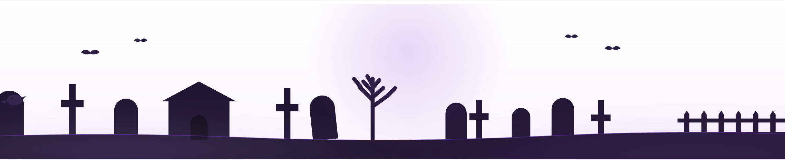
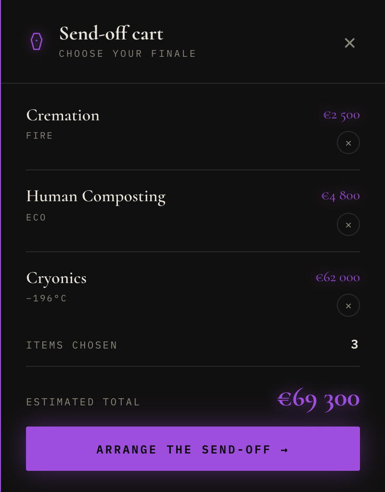
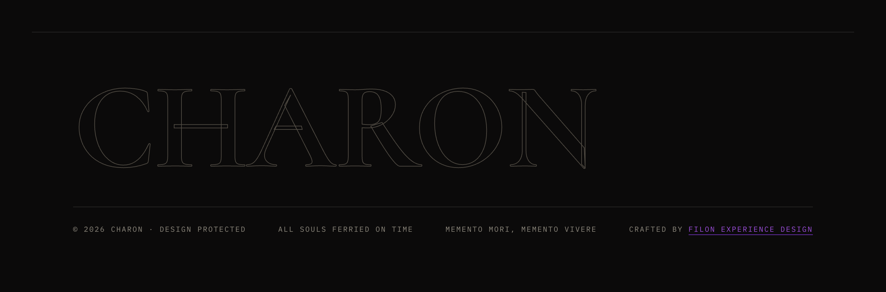

A concept funeral agency for people who want their final farewell to feel personal, not predictable. Unconventional send-offs, bold art direction and dark humour turn a difficult subject into an experience that feels human, memorable and easier to approach.
I set myself a hard category on purpose. Death is the one product everybody buys and nobody wants to browse. The category compensates with euphemisms, stock photography and a visual language that hasn’t changed since the nineties — which is exactly why it is worth redesigning.
The brief: an agency for two kinds of people. Those who plan ahead and want their own send-off to be theirs — a tree, a reef, a diamond rather than a plot with carnations. And those who have just lost someone and refuse the default package — they want something better, more personal, and they need it this week. Both deserve honesty, real prices and a service that talks to them like adults. Not a joke site. A serious service with a sense of humour, built on the Stoic idea of memento mori: remembering that you will die is not morbid — it is what makes you choose deliberately while you can. Charon, the ferryman of Greek myth, gives that idea a face, a name and a coin.
Three weeks, one person. Each stage produced one artefact the next stage could not start without.
Read how funeral pricing actually works in IE / UA / RO; what “eco”, “aquamation”, “promession” legally mean; where the taboo sits in each language.
Three live agency sites, side by side. Pattern found everywhere: no prices, grey templates, “dignity” copy — and no catalogue of alternatives anywhere.
The one decision everything hangs on: honesty with one smile per screen. Four writing rules fixed here and never changed.
All copy written first, both languages. Then the single-page flow: land → trust → choose → stack → hand over, with every edge state listed.
Low-fi structure for hero, services, tiers, cart, contact. Locked before any colour: what goes where and why.
Two near-blacks, one violet that glows, a heavy serif, a mono for everything else, a 1.4px icon set. Atmosphere layer designed as a system of small behaviours.
Built with AI coding tools (Claude) from the locked design and copy — one HTML file, vanilla JS, Web Audio. Then QA by hand: reduced motion, keyboard, contrast, 900 / 620 breakpoints, empty-cart, double-add and 404 states.
Deployed as a static site with a designed 404. Bilingual, no framework, no tracking. Open questions carried into the hypotheses at the end of this case.
The planner arrives sceptical and leaves with a list. That is the whole flow — the design work was deciding what each step must prove before the person moves on.
Prove the tone in 3 seconds: preloader joke → headline → “1 OBOL”. If the humour offends, better it happens here, for free.
Manifesto + three stats. “0 client complaints” is the one smile; the rest is straight talk about what the agency does and doesn’t do.

15 cards, every price visible, 4 filters. Selecting lights a candle on the card — the state is the reward.

Tiers are “+ price” add-ons, never packages — so choosing a tier never undoes the ceremony already chosen.

Cart → three-field form, message pre-filled with the list. Objections are pre-answered in FAQ just above it.

Two columns: claim + primary action on the left, one object of curiosity on the right. The object became the obol — the coin for the ferryman.
Filter row + uniform cards: title, one line, price, add. The one thing added later was the candle — a state indicator that fits the world.
The whole site rests on four writing rules. They decide what a button says, what the ticker whispers and where the joke stops.
Say “cremation”, not “eternal rest”. Name prices. Name what happens to the body.
Humour is a pressure valve, not a gag reel. Each section gets exactly one line that lands.
We joke about death, logistics and ourselves. Never about the person who died or the one who is grieving.
Charon, the obol, the Styx: one ancient story carries the naming, the icons and the coin in the hero.
Two near-blacks give depth without gradients. Violet is the only saturated colour on the site and it is always allowed to glow — text-shadow, box-shadow, drop-shadow — because in this world the accent is a light source, not a fill.
Every detail earns its place: subtle motion holds attention, builds atmosphere and gives the dark tone a pulse. The experience was art-directed and built through an AI-assisted workflow using custom CSS and vanilla JavaScript — without animation libraries and with reduced-motion preferences in mind.
The pointer is a lit candle. Its 240px light reveals dimmed service cards; light a card’s own candle and it stays lit forever. It leaves a wisp of smoke on click and flickers faster over anything interactive.
Six SVG ravens perch on section anchors and fly off along bezier paths; touch one with the candle flame and it disintegrates into ash. They caw with a real voice — a public-domain field recording (Corvus corax, U.S. National Park Service) cleaned in-browser with Web Audio filters.
The nav holds a small moon that waxes as you scroll — new moon at the top, full moon at the contact form. The same information as a progress bar, told in the site’s own language.
Blurred violet ellipses drift on 40–70 s loops in screen blend mode; an SVG turbulence grain at 5% sits on top. Together they stop flat #0b0a0a from reading as “dark mode”.
A macabre 3/4 organ waltz (Am–Dm–E7–Am, 84 BPM) is synthesised live with Web Audio — zero music files. The nav toggle controls music only; the match strike, cart chime, burning and the heartbeat near the contact form stay on. Nothing plays before the first click.
2.5 seconds of black, the wordmark, and one line: “Loading… like everything in this world — temporary.” The joke is the first thing you read, so the tone is set before the content.

Nobody in the category shows prices. CHARON does the opposite: every ceremony is a card with a number, a one-line description and a tag — Fire, Water, Eco, Beyond. Filter, tap, and a candle lights on the card while the item flies into the drawer.
Tiers are add-ons, not packages: a “+ price” that stacks direction, music and detail on top of whatever ceremony you chose — so “Total Darkness” makes sense on a €2 500 cremation and on a €62 000 cryonics alike. The drawer keeps a running estimate and hands the list to the contact form.


Once the four writing rules existed, half the visual decisions made themselves: the violet had to glow, the serif had to be heavy, the icons had to be thin. Copy came first, layout second, atmosphere last — and each layer was checked against the layer below it.
Designing and building in one pair of hands removed the usual hand-off gap — the candle flickers exactly as intended. The honest cost: without user testing yet, everything below is a hypothesis, not a result.
If every price is visible up front, planners will compare and shortlist instead of leaving to phone around.
Dark humour raises trust for the planner but drops it for the mourner — so a quiet mode is needed, not a softer joke.
“+ price” tiers read as add-ons, not packages, and stop people from downgrading a ceremony to afford a tier.